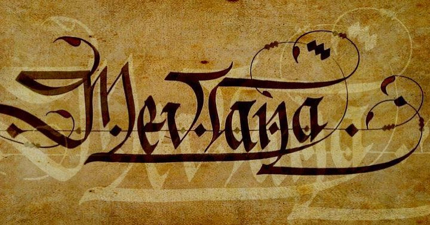
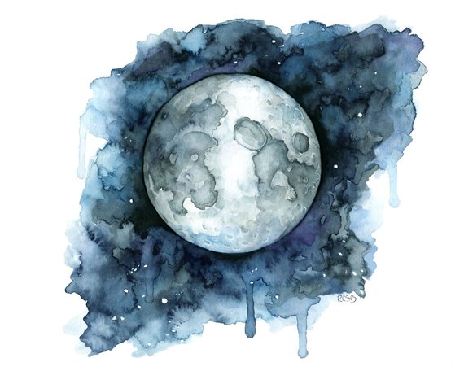
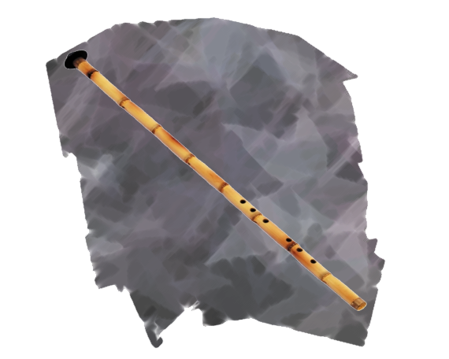
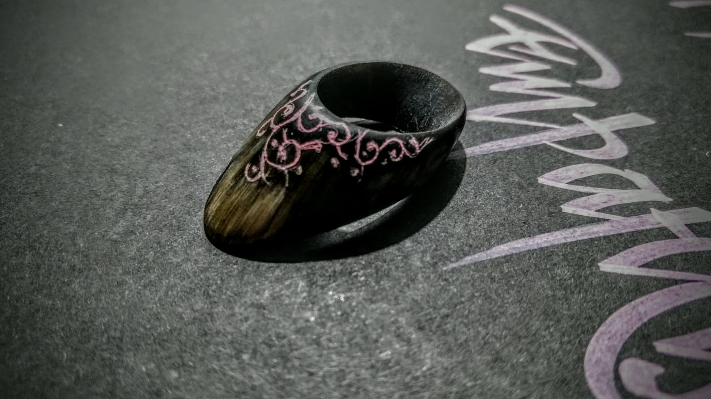

uğraşlarım

kaligrafi

suluboya

ney üflemek

zihgir yapımı
Bilgisayar Mühendisliği mesleki eğitimi dışında Görsel Sanatlar ile ilgileniyorum.Bunların başında kaligrafi geliyor.Kaligrafi yunanca bir kelime olup kallos ve graphe kelimelerinin birleşiminden oluşur ve "güzel yazı" anlamına gelir.Osmanlı zamanında buna "hüsn-ü hat" yani "yazı güzeli" denilirdi.Hat sanatı hem bilgi aktarma hem göz hazzı uyandırmayı amaçlar.Camilerimizde en güzel örneklerini gördüğümüz bu şaheserler okuyanı aydınlatır okuyamayanı da mest eder.Ben arapça yazamadığım için Latin alfabesi kullanılarak yaptığım için Hat Sanatı tabirini kasten kullanmıyorum.Kahveniz ve müziğiniz varsa kendinize kesik uçlu bir kaligrafi kalemi alıp estetik çizgiler yakalama uğraşına başlayabilirsiniz.Bunun yanında görsel bütün sanatlarla ilgi duyup karakalem ve suluboyayla ilgileniyorum.Bunun yanında ney üflüyorum ve Osmanlıda okçuların -kemankeş- kullandığı zihgir yüzüğü yapıyorum.Bu yüzük ok atmak için kullanılan bir aparattır ve elinizin yıpranmasının önler.Genellikle manda boynuzundan ve metal madenlerden yapılmaktadır.Benim favorim Kurban Bayramlarında topladığım boğa boynuzları.Eğer aceleci değilseniz ve ince el becerilerinizi kullanmayı seviyorsanız bu da boş zamanlarınızı daha keyifli geçirmenize yarayabilir ve sevdiklerinize hediye edebilirsiniz.Çalışmalarımı İnstagramdan takip etmek istiyorsanız